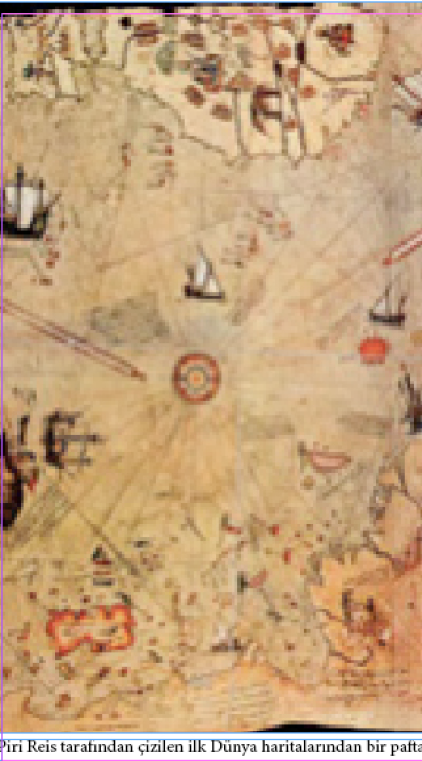
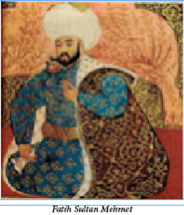

ÖNSÖZ
Tarihi hiç sevmezdim. Ta ki 14 yaşında Reşat Ekrem Koçu’nun “Tarihimizde Garip Vakalar” adlı kitabını okuyana kadar. Kendi döneminde bazı çevreler tarafından “tarihi magazinleştirmek”le suçlanan ve bu nedenle kıymeti kendinden menkul akademisyen çevreler tarafından hakir görülen bu adam bana bir anda, tek kitapla sevdirdi tarih okumayı. Sonraları uzun uzun düşününce neden olduğunu anladım: O güne dek okuduğum tüm tarih kitaplarında (özellikle Türk tarihi kitaplarında) tüm padişahlar aslan yürekli, tüm padişah eşleri güzeller güzeli, tüm şehzadeler pırlanta tanesi, tüm devlet adamları dirayetli idi… Oysa Reşat Ekrem Koçu herkese hak ettiği kadar değer veriyor, özel bir önemi olmayanlara laf etmese de üzerlerine fazla eğilmiyordu. Zaten 629 yıllık Osmanlı İmparatorluğu tarihindeki herkesin “aslan parçası” olması hem olanaksız, hem de gereksizdi, ama bunu bana ilk kez hissettiren Reşat Ekrem olmuştu…
Bu kitabı hazırlarken internette dolaşan ve kaynağı belirsiz, ama gerçekten şaşırtıcı görünen olaylara yer vermekten kaçındım. Neredeyse on beş yıldır topladığım notları ve basılmış, ciddi kitapları kaynak olarak kullandım. Bunlar dışında hiçbir bilgiye yer vermedim. “Filanca padişahın bir kılıç darbesiyle adamı ikiye böldüğü” veya “falanca padişahın bir cirit atışıyla beş yüz metre uzaktaki kuşu vurduğu” türünden “bilimsel” hikayelere hiç yer vermediğim gibi, tarihimizde çok bol miktarda olan nüktedan anekdotlara da çok az yer verdim. Tamamen o tür anekdotlardan oluşan başka bir kitap hazırlıyorum zaten…
Neredeyse “internet icat oldu, araştırmacılık bozuldu” noktasına gelmeme ramak kaldığından, kaynakçamda fazla internet sitesine yer vermedim. İnternetten yararlandığımda ise, bu sitelerin çok seçkin olmasına özen gösterdim. Bu sitelerde bile gördüğüm hemen her bilgiyi başka kaynaklarla karşılaştırmayı da unutmadım. Birçok da hata buldum zaten. Özellikle akademisyenler tarafından hazırlanan dosyaların PDF formatlarına kolaylıkla ulaşılabildiğim siteler şüphesiz en güvendiğim kaynaklar oldu. İnternetin en tehlikeli yanı “copy-paste” mantığı olduğu için, rastgele bir sitede sözgelimi “I. Abdülhamit” yerine yanlışlıkla “II. Abdülhamit” yazılmayagörsün, bir ay içinde yüzlerce sitede aynı yanlış bilgi bir virüs gibi yayılıyor. Çünkü internet kullanıcılarının çok büyük bölümü hoşuna giden bir yazı gördü mü hemen “kes-yapıştır” yapıveriyor, yazılanların gerçeğe uygunluğunu hiç kontrol etmeden hem de. Bu nedenle, elinizdeki kitap için, benzeri kitaplardan yararlanıldığını, ama hemen her bilginin temel kaynağa kadar inilerek kontrol edildiğini söyleyebilirim. Bazı yerlerde, kaynakta yazılan bilgiyi bir türlü onaylatamadığım durumlarda çekincelerimi de dipnot olarak belirtmeyi zorunlu gördüm…
Yıllar önce “Hayat Tarih Mecmuası” veya “Yıllarboyu Tarih” gibi dergilerin sayfalarında gördüğüm kısa ve ilginç bilgileri derlemekle başlayan bu zevkli hobimin sonucu olan bu mütevazı, ama eğlenceli kitabı değerli yazar ve araştırmacı Reşat Ekrem Koçu’nun (1905 – 1975) aziz anısına ithaf ederek bitiriyorum sözlerimi. Bu kitap onun bana aşıladığı “tarih okuma zevkini” bir tek çocuğa veya gence aşılarsa, yıllar yılı topladığım tüm o irili ufaklı notlara verdiğim emek yerini bulacaktır…
Sabri Kaliç

BUDİST TÜRKLER: TOBALAR
Türkler arasında Budizm 385-550 yılları arasında Kuzey Çin’de kurulan Toba Devleti zamanında yayılmıştır. Aslen Türk olan Tobalar memur olarak Çinlileri kullanıyorlardı. Tobalar zamanla Budizm’i kabul ettiler ve Çinlileştiler. 8. yy.da Çinlilerle iş birliği yapan ve diğer Türklerle savaşan Uygurlar önce Mani, daha sonra Buda dinini kabul ettiler. Doğu Türkistan’da yaşayan Uygurlar dinlerini değiştirmekle beraber dillerini korudular ve Türkçe pek çok eser meydana getirdiler. Göktürkler ise kendi örf ve âdetlerine uymadığı için bu dini kabul etmediler. Gerçekten de Türklerin hayata bakışı ile Budizm arasında büyük fark vardı: Türklerde hayvan eti yemek günah değildir. Tam tersine onların başlıca gıdası hayvan etidir. Oysa Budizm’in beş büyük günahından biri hayvan dahil, canlı varlık öldürmekti. Kültüründe avcılık ve hayvan eti yemek olan Türkler bu nedenle Budizm’le çok uyuşamadılar ve Budizm bu nedenle Türkler arasında fazla yayılamadı.
HALLEY KUYRUKLUYILDIZI VE
FATİH SULTAN MEHMET

Fatih Sultan Mehmet tahta çıktığı zaman bir kuyrukluyıldız görülmüştü ve Papa o zaman yıldızı “Türk ve Müslüman dostu zındık yıldız” olarak aforoz etmişti. Sonradan, bu kuyrukluyıldızın Halley kuyrukluyıldızı olduğu öğrenildi. Balkan Harbi’nde (1912) Bulgarlar Çatalca’ya kadar ilerlerken Halley kuyrukluyıldızı yine görülmüştü. O zaman kilise adamları: “Türklerin uğur yıldızı göründü, Bulgarlar yine mağlup olacaklar!” demişti ve gerçekten de öyle oldu.
Çatalca Muharebesi’ni kazandık, Balkanlı müttefikler arasına nifak girdi ve Edirne’yi Bulgarlar’dan geri aldık.
ÇADIRI BAŞINA YIKILAN SADRAZAM
Osmanlı imparatorları bir sefer sırasında hareketlerinden memnun olmadıkları sadrazamı çadırını başına yıktırmak suretiyle azlederlerdi. Bu çeşit azli ilk defa uygulayan Fatih Sultan Mehmet’dir. Fatih, Karaman seferi sırasında Sadrazam Mahmut Paşa’yı (İstanbul’da bu adla anılan cami, hamam ve çarşıyı yaptıran Mahmut Paşa budur) çadırını başına yıktırarak azlettirmiştir. Bazı kaynaklar bu gözden düşmeye, Mahmut Paşa aleyhine çevrilen entrikaların sebep olduğunu kaydeder.
Çadırı başına yıkılarak azledilen bir başka sadrazam da Hersekzâde Ahmed Paşa’dır. Yavuz Sultan Selim’in Çaldıran dönüşünde, Amasya civarında, halkın yeniçerilerin yağmacılığından şikâyeti üzerine gazaba gelen padişah, Sadrazam Hersekzâde ile Vezir Dukakinoğlu Ahmed Paşa’yı, çadırlarını başlarına yıktırarak azletmiştir. Ahmet Paşa bu olaydan altı ay kadar sonra idam edilmiştir.
Çadırın direklerini söktürerek yıktırmanın iktidardan düşme alâmeti olması, İslâm’dan önceki zamanlardan kalma bir Türk âdetidir.
BİZANS, TOPÇU URBAN’I REDDETMİŞTİ
Urban bu silahın zafer kazandıracağını biliyordu ve iyi bir silah tüccarı gibi bu fikri satmak için dolaşmaya başladı. Akla ilk gelen müşteri adayı tabii ki Konstantinopol’dü.
II. Mehmet’in orduları Çanakkale Boğazı’nın doğu tarafında toplanıyordu ve Osmanlı Türkleri Bizans’a karşı kutsal bir savaş ilan etmişti. Urban’ın teklifini ilk olarak İmparator XI. Konstantin’e götürmesinde az da olsa din ve ırk birliğinin etkisi vardı.
Hazırladığı süper silahların planlarını göstererek buna sahip olacak herhangi bir şehrin tüm saldırıları kolayca püskürtebileceğini anlattı. Bu güçlü silahtan atılacak bir mermi, yüzlerce saldırganı öldürebilir ya da bir gemiyi batırabilirdi. Düşman karşılarına aynı büyüklükteki silahlarla çıksa bile onları daha kullanamadan etkisiz hale getirilebilirdi.
Ancak Urban reddedildi. Danışmanlar denenmemiş silahlara para harcamaktansa o parayla biraz daha kiralık asker tutulabileceğine karar verdi. Herhalde Bizans, Urban’ın bir silah tüccarı olduğunu ve bir dahaki durağının Boğaz’ın öte yakası olacağını düşünememişti. II. Mehmet teklifi hemen kabul etti ve Urban’la bu silahları hazırlaması için anlaştı.
Bir yıl sonra Mehmet’in ordusu şehri kuşattı. Kuşatmanın kaderini Urban’ın dev topları belirledi. Silahlar Bizanslıların Rum Ateşleri’nin menzili dışına yerleştirildi. Ayrıca bu silahların yapılması için harcanabilecek parayla tutulan askerlerin oklarından da uzaktı.
Surlar yıkıldı, Türkler içeri girdi ve XI. Konstantin öldürüldü. Urban’ın silahlarını reddeden danışmanların da Konstantin ile birlikte öldüğünü düşünmek isteyebilirsiniz ancak bu tür bir adalet nadiren gerçekleşir.
Urban’ın silahları Türklere satma fikri uzun vadede yanlış bir karar olabilirdi. İstanbul artık Türklerin önünde bir engel değildi, dahası Osmanlı İmparatorluğu’nun başkenti olmuştu. Bu da tüm Güneydoğu Avrupa’nın savaş alanı haline gelmesi demekti. Dahası Türkler Viyana’ya kadar uzanacak ve Urban’ın kendi ülkesi de bir savaş alanına dönecekti. Urban’ın malını satıp para kazanma tutkusu Macaristan’ın bugün bile korkulu rüyası olan, beş yüz yıllık bir çatışmaya neden olmuştu.
AYI POSTU GİYEN ASKERLER
Fatih, Tuna üzerindeki kalelerden birini kuşatmıştı. Kale yedi ay toplarla dövüldü. Ordu yürüyüşe geçip yaklaşırken, kaleden bir kaç ayının çıktığını gören Fatih: “Buradan hırs(ayı) geliyor’’ dedi. Gelen ayılar askerleri görüp geri dönmüş, kalenin mağaralarına girmişlerdi. Bir kaç yürekli asker bu ayıların peşinden mağaraya daldı. Meğer bunlar sırtlarına ayı postu geçirmiş düşman askeri imişler. Mağaraların içi kaleye geçit veriyordu. Osmanlı askerleri bu geçitleri aşıp kaleyi fethettiler. Kale çevresinin adı “Hırsova’’ kaldı.
HAZIRA DAĞ DAYANMAZ
15. yüzyılın namlı zenginlerinden Molla Rüstem Bursa’da ölürken on dört yaşındaki oğluna yüz yıl ömür biçmiş ve her gününe yüz florin (Floransa altını) hesap ederek 3.600.000 florin gibi muazzam bir miras bırakmıştı. Bu mirasyedi çocuk babasından sonra ancak yedi yıl yaşadı ve bütün paralarını yedi. Yalın ayak, perişan bir kebapçı çırağı oldu. Sefalet içinde, bir hamam külhanında öldü. Bu parayı nasıl harcadığına bir örnek: Bir gün 100 florine bir tazı satın alır. Bir bağda bir tavşan olduğunu haber verirler, haberciye 100 florin verir, tavşanı ininden çıkaran adama da 100 florin verir, fakat tazı tavşanı tutamaz, Molla Rüstem’in oğlu da tazıyı bir kılıçta ikiye bölermiş.
FATİH’İN MUTFAĞI
1473 (Hicrî: 878) yılının Şaban ayına ait Fatih Sultan Mehmet sarayının bir mutfak defteri vardır. İstanbul fatihinin her gün ne yediğini, sarayında en çok pişen yemeklerin neler olduğunu, bir günlük ve bir aylık mutfak masrafının neye çıktığını gösteren bu defter tarih ve toplumbilim bakımından çok değerli bir belgedir. Reşat Ekrem Koçu bu defterden bazı ilginç notlar aktarır. 1473’te İstanbul’da erzak piyasası şudur:
• Sadeyağın okkası 8, zeytinyağının 6, armudun 5, üzümün 2, tuzun 2 akçe1… 200 yumurta 23, 1000 limon 70 akçe… Bulgurun kilesi 16, kestanenin kilesi 20 akçe… (Bir kile 8 okkadır)
1 Akçe: İlk dönemlerinde 900 ayar gümüşten üretilmeye başlanan, fakat zaman içinde gümüşün kalitesi yarı yarıya düşürülen bir madeni para. Bazı kaynaklar 3 akçenin 1 ‘para’ya, 120 akçenin ise 1 ‘kuruş’a eşit olduğunu söylese de akçenin değeri her dönemde değişiklik göstermiştir.
• Defter o zamanın Türkçesi bakımından da pek ilginçtir. Örneğin balığa, ‘mâhî’; kaza, ‘gerdendiraz’ (uzun boyunlu); tavuğa ‘mâkiyan’ deniliyordu. Soğanın adı ‘piyaz’, lahananın adı ‘kalem’, cevizin adı ‘kirdigân’, karpuzun adı ‘kürbeze’, karabiberin adı ‘fülfül’ idi.
• Bu mevsim ve bu ayda sarayda hemen her gün pişen yemek, saray halkının yediği lahana çorbası idi. Fatih Sultan Mehmet de her gün balık, istiridye, karides ve ıstakoz yemişti.
OSMANLI’DA “DELİLER” BÖLÜĞÜ
15. yüzyılın başından itibaren Osmanlı ordusunda Balkan kökenli “deliler” diye bir bölük oluşturulmuştu. Gözü pek, hiçbir şeyden yılmayan ve akıllarına ne eserse yapan bu askerlere “deliler” denmesinin bir nedeni cesaretleri, bir nedeni de garip giyimleriydi. Başlarına pars veya benekli sırtlan postundan yapılma başlıklar takar, ayı, pars, aslan veya sırtlan postundan yapılmış şalvarlar giyerlerdi. Giysilerinde kullandıkları tüm postlar kılları dışarıya dönük giyildiği için, delileri ilk görüşte gerçek hayvanlardan ayırmak da kolay değildi. Delilerden başarılı olanları ‘ağa’ olur, ağaların en başarılısı da ‘delibaşı’ sıfatı kazanırdı. Törenlerde koruma olarak sadrazamın önünden yürüyen deliler halk tarafından da cesaretleri nedeniyle büyük saygı ve takdir görürlerdi. Bazı Osmanlı padişahlarının, özellikle de III. Selim’in kılık değiştirip halk arasında gezeceği zaman sık sık ‘deli’ kıyafeti giydiği söylenmektedir.
ANAN NE GİYİNSİN SÜLEYMAN?
Yavuz Sultan Selim devlet harcamalarında olduğu gibi kişisel harcamalarında da sadeliği ön planda tutardı. Lüks ve israfa kaçan süslü elbiseleri giymeyi sevmezdi. Süslü elbiselerin kadınlara yakıştığını düşünür ve erkeklerin böyle giyinmelerini de doğru bulmazdı. Günün birinde oğlu Şehzade Süleyman pek süslü ve parlak elbiseler giyinmiş ve pahalı
mücevherleri takınmış olduğu halde huzuruna çıktı. Oğlunun bu süslü giyimini gören padişah, şöyle dedi:
“Sen böyle giyinirsen anan ne giyinsin Süleyman? Anana takacak ziynet bırakmamışsın.”
GALATASARAY LİSESİ
Galatasaray Lisesi Türkiye’de kuruluş tarihi en eski olan okuldur. Temeli Fatih Sultan Mehmet’in oğlu II. Sultan Bayezit tarafından atılmıştı. Rivayet edilir ki:
O zamanlar, Galata’nın arkasındaki sırtlar, yani Beyoğlu, muazzam bir ormanla kaplı bir kırlıktır. Avcıların gezip dolaştığı yerlerdendir. Bir kış günü Sultan Bayezit da oralarda avlanmağa çıkar. Bugünkü Boğazkesen Caddesi’nin geçtiği vadide tipiye tutulur. Sığınacak bir yer ararken gözüne bacasından duman tüten bir kulübe ilişir ve hemen oraya at sürüp kapısını çalar… Kapıyı beyaz sakallı, yüzü nurlu bir ihtiyar açar, “Buyurun padişahım!” der. Sultan Bayezit içeriye girer. Girer ama şaşırır kalır; kulübenin içi gül saksılarıyla doludur. Fidanların hepsinde taze taze güller açmıştır. Padişah ile münzevi derviş saatlerce sohbet ederler. Sultan Bayezit kalkacağı sırada: “Gül Baba! Benden ne istersin?” deyince münzevi de: “Padişahım, burada bir mektep yaptır. Bu mektepte okuyup yetişenleri de devlet hizmetinde kullan” cevabını vermiş.
Saraya dönen Padişah hemen emir vermiş. Orada şu kadar bin dönümlük arazinin etrafına duvar çekilmiş. İçinde iki yüz çocuğun okuyabileceği üç koğuşlu bir okul yaptırmış. Okula bir camii, her koğuşa birer hamam, çocukların başındaki amirler için daireler yapılmış. Farsça, Arapça, okuma-yazma, musiki hocaları tayin edilmiş. Bu arada Gül Baba da bu yatılı okulun elifba hocası olmuş…